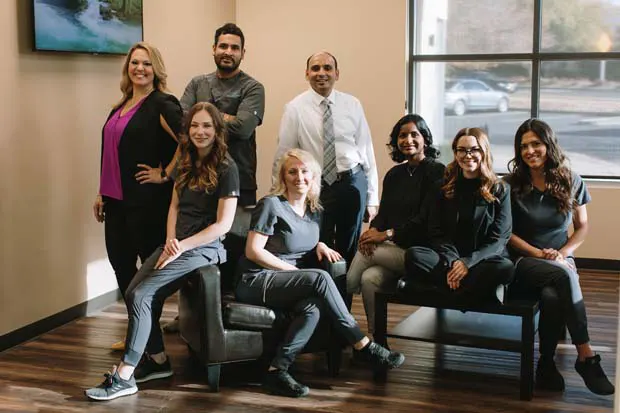
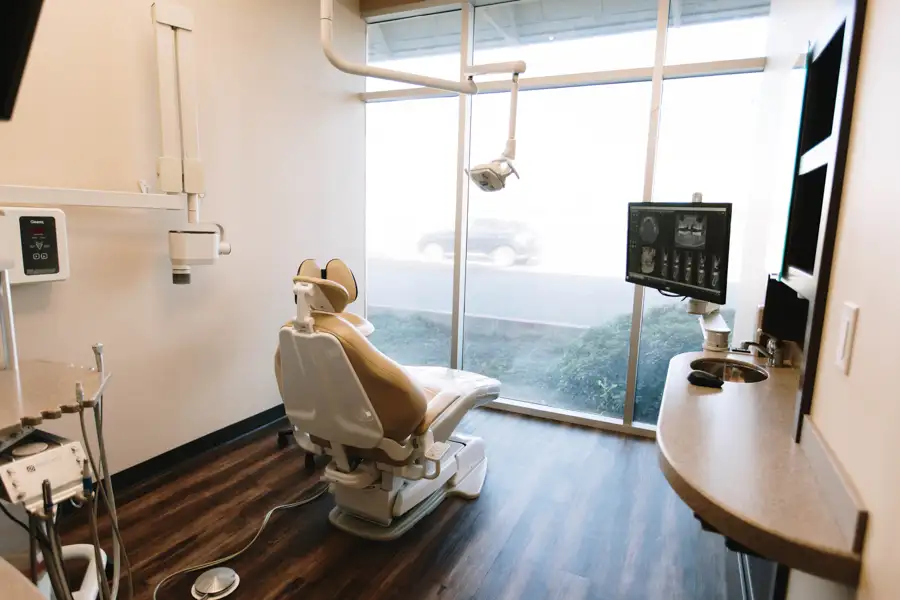
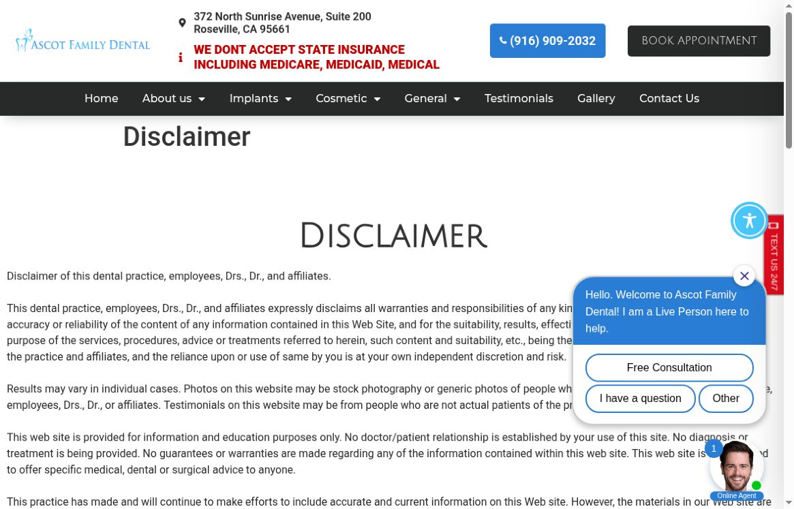

Visible clinicians
The landing site introduces the doctors and shows a real team photograph.
 Prepared for / Ascot Family DentalDiscuss the plan ↗
Prepared for / Ascot Family DentalDiscuss the plan ↗Your public sites already give patients a team to meet, an office to explore and treatment-specific pages to read. That is a strong foundation. The opportunity is to make the evidence, offer language and appointment journey feel equally consistent.
See the findings + our fixes ↘

Specific public observations. A concrete fix for each. Where a test could not establish the answer, we say so.
The public disclaimer says testimonials may be from people who are not actual patients. That wording creates uncertainty; it does not prove any particular review is fabricated.
Verify each testimonial’s provenance and permissions. Replace generic disclaimer language with accurate, specific attribution reviewed by the practice.
The implant special lists consultation, CBCT scan and implant placement, followed by conditions. A patient still needs a clear explanation of restoration components and eligibility.
Create an inclusion / exclusion summary, explain the full treatment pathway and put applicable conditions beside the CTA. Have the clinical team approve it.
The implant page uses “Highest Implant Success Rates” and a claim about very few dentists achieving its level of expertise. No substantiating study is presented beside those statements.
Replace unsupported comparisons with specific training, treatment process and evidence the practice can substantiate. Obtain qualified review where needed.
No meta-description tag was found in the fetched landing homepage or implant page. This is a page-level finding, not a claim about every page.
Write distinct titles and descriptions, add useful service context and validate structured data on the priority journey.
Two different Meta Pixel identifiers are embedded in the landing-site source. Their purpose and event behavior were not verified.
Map account ownership, consent and conversions. Consolidate only if the account review confirms duplication, and preserve legitimate integrations.
The implant page presents request-an-appointment, save-offer and phone paths alongside an offer countdown. Each needs a clear role and a real follow-up process.
Choose one primary consultation action, explain what follows, and validate the offer deadline before showing urgency.

Unaltered source capture. Public page state can change; the observation above describes this review session.
Open full capture ↗ AIMS Sports RecoveryVessel client work. Website, content and campaign case study.View the work ↗
AIMS Sports RecoveryVessel client work. Website, content and campaign case study.View the work ↗ Precision Home LoansClient work / Megan Meyerdick. Her Precision Home Loans client brand is shown.
Precision Home LoansClient work / Megan Meyerdick. Her Precision Home Loans client brand is shown.One connected plan for the website, production, campaigns and follow-up. The scope starts with the problems above.
Verify patient permissions, attribution and treatment claims. Build one offer page with clear inclusions and accurate next steps.
Produce clinician-approved interviews and practice footage. Keep patient consent, clinical accuracy and context central to every edit.
Audit current ads and their exact destinations before proposing tests. Align every approved message with the page it opens.
Document vendor ownership, pixels, calls and form events. Report inquiry quality and consultations without counting the same action twice.
Proposed work for discussion, not a production commitment. Final deliverables, access, publishing approvals and timing would be agreed together. Your team retains operational decisions, clinical review where relevant, permissions and customer / patient responses.
Bring the real expertise forward. Each concept has one question, one useful answer and one clear next step.
“Let’s walk through the treatment plan.”
Dr. Parikh explains the components, eligibility and questions a patient should ask, using approved language.
“Who will look after me?”
Short clinician introductions filmed in the real office, with verified credentials and a calm explanation of the process.
“What did you need to understand before deciding?”
A consented patient interview focused on their individual experience. Confirm attribution and avoid universal outcome claims.
These are proposed concepts. Filming dates, volume, participants and reuse rights would be confirmed before production. All medical explanations and case stories require practice approval and appropriate consent.
Verify the foundations. Build the first useful journey. Learn from real inquiries before widening the scope.
Review testimonial permissions and claims, confirm offer conditions and map website / advertising ownership.
Produce the approved proof set and focused consultation page. Test forms, calls and consent-aware events before campaign changes.
Compare creative and qualified inquiries, review follow-up with staff, and update page content from recurring patient questions.
Public pages and conversion routes inspected in a cloud browser and fetched source. No form submitted. Real-device touch, keyboard and form testing remains a launch gate.
No new Lighthouse or field-performance result established. A repeatable baseline and retest of the agreed pages would establish the performance work.
Website proof reviewed. Live Google counts, review responses and profile fields were not independently verified; reconcile with direct profile access.
A current official Instagram profile and latest post cadence were not independently confirmed. Current posting cadence remains to be confirmed.
Current active inventory, spend and exact destination URLs were not independently verified. Review Ads Manager / Ad Library before proposing changes.
Two Meta Pixel identifiers were observed in source. Firing, deduplication, consent behavior and call tracking need direct account validation.
Visible entry routes and expectations inspected without submitting personal information. Confirmation delivery and staff response remain untested.
Sampled public copy, links and metadata reviewed. Search Console, index coverage and local map positions were not verified.
No repeatable ChatGPT / Google AI visibility benchmark was established. Test named prompts, location and dates before drawing conclusions.
Practice facts, clinical statements, filming permissions, source footage rights and any regulated advertising language require appropriate review before launch.
This is a public-information review, not an account audit or legal / clinical opinion. No access to private analytics or ad accounts was assumed, and no claim of lost revenue, guaranteed bookings, search position or universal technical failure is made. Timing depends on access, approvals and the agreed scope.
Agree the first treatment page, confirm its full inclusions and select the clinician who will explain it on camera. Start with verified proof and a clear patient handoff.
Discuss the first scope ↗